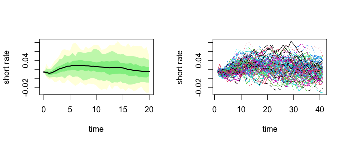
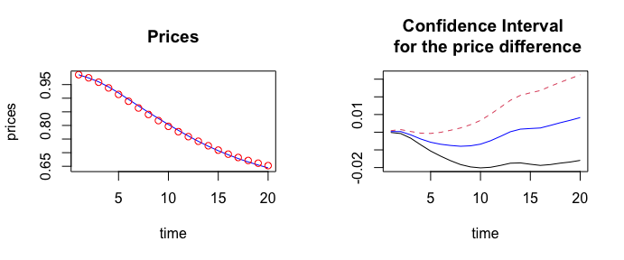
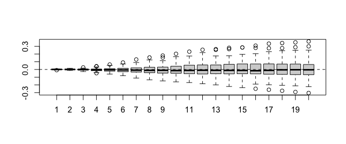

rm(list=ls()) # beware, removes everything in your environment
library(esgtoolkit)## Loading required package: ggplot2## Loading required package: gridExtra## Loading required package: reshape2## Loading required package: VineCopula## Loading required package: randtoolbox## Loading required package: rngWELL## This is randtoolbox. For an overview, type 'help("randtoolbox")'.##
##
## This is version 1.2.1 of esgtoolkit. Starting with 1.0.0, package renamed as: 'esgtoolkit' (lowercase)
##
##
# Observed maturities
u <- 1:30
# Yield to maturities
txZC <- c(0.01422,0.01309,0.01380,0.01549,0.01747,0.01940,
0.02104,0.02236,0.02348, 0.02446,0.02535,0.02614,
0.02679,0.02727,0.02760,0.02779,0.02787,0.02786,
0.02776,0.02762,0.02745,0.02727,0.02707,0.02686,
0.02663,0.02640,0.02618,0.02597,0.02578,0.02563)
# discount factors
p <- c(0.9859794,0.9744879,0.9602458,0.9416551,0.9196671,
0.8957363,0.8716268,0.8482628,0.8255457,0.8034710,
0.7819525,0.7612204,0.7416912,0.7237042,0.7072136
,0.6922140,0.6785227,0.6660095,0.6546902,0.6441639,
0.6343366,0.6250234,0.6162910,0.6080358,0.6003302,
0.5929791,0.5858711,0.5789852,0.5722068,0.5653231)
# Creating a function for the simulation of G2++
# Function of the number of scenarios, the method (
# antithetic or not)
simG2plus <- function(n, methodyc = c("fmm", "hyman", "HCSPL", "SW"))
{
# Horizon, number of simulations, frequency
horizon <- 20
freq <- "semi-annual"
delta_t <- 1/2
# Parameters found for the G2++
a_opt <- 0.50000000
b_opt <- 0.35412030
sigma_opt <- 0.09416266
rho_opt <- -0.99855687
eta_opt <- 0.08439934
# Simulation of gaussian correlated shocks
eps <- esgtoolkit::simshocks(n = n, horizon = horizon,
frequency = "semi-annual",
family = 1, par = rho_opt)
# Simulation of the factor x
x <- esgtoolkit::simdiff(n = n, horizon = horizon,
frequency = freq,
model = "OU",
x0 = 0, theta1 = 0, theta2 = a_opt, theta3 = sigma_opt,
eps = eps[[1]])
# Simulation of the factor y
y <- esgtoolkit::simdiff(n = n, horizon = horizon,
frequency = freq,
model = "OU",
x0 = 0, theta1 = 0, theta2 = b_opt, theta3 = eta_opt,
eps = eps[[2]])
# Instantaneous forward rates, with spline interpolation
methodyc <- match.arg(methodyc)
fwdrates <- esgtoolkit::esgfwdrates(n = n, horizon = horizon,
out.frequency = freq, in.maturities = u,
in.zerorates = txZC, method = methodyc)
fwdrates <- window(fwdrates, end = horizon)
# phi
t.out <- seq(from = 0, to = horizon,
by = delta_t)
param.phi <- 0.5*(sigma_opt^2)*(1 - exp(-a_opt*t.out))^2/(a_opt^2) +
0.5*(eta_opt^2)*(1 - exp(-b_opt*t.out))^2/(b_opt^2) +
(rho_opt*sigma_opt*eta_opt)*(1 - exp(-a_opt*t.out))*
(1 - exp(-b_opt*t.out))/(a_opt*b_opt)
param.phi <- ts(replicate(n, param.phi),
start = start(x), deltat = deltat(x))
phi <- fwdrates + param.phi
colnames(phi) <- c(paste0("Series ", 1:n))
# The short rates
r <- x + y + phi
colnames(r) <- c(paste0("Series ", 1:n))
return(r)
}
set.seed(3)
# 4 types of simulations, by changing the number of scenarios
ptm <- proc.time()
r_SW <- simG2plus(n = 100, methodyc = "hyman")
proc.time() - ptm## user system elapsed
## 0.127 0.006 0.150
par(mfrow=c(1, 2))
esgtoolkit::esgplotbands(r_SW, xlab = 'time', ylab = 'short rate')
matplot(r_SW, type = 'l', xlab = 'time', ylab = 'short rate')
# Stochastic deflators :
deltat_r <- deltat(r_SW)
Dt_SW <- esgtoolkit::esgdiscountfactor(r = r_SW, X = 1)
Dt_SW <- window(Dt_SW, start = deltat_r, deltat = 2*deltat_r)
# Market prices
horizon <- 20
marketprices <- p[1:horizon]
# Monte Carlo prices
montecarloprices_SW <- rowMeans(Dt_SW)
montecarlo_ci <- apply(Dt_SW, 1, function(x) t.test(x)$conf.int)
# Confidence intervals
estim_SW <- apply(Dt_SW - marketprices, 1, function(x) t.test(x)$estimate)
conf_int_SW <- apply(Dt_SW - marketprices, 1, function(x) t.test(x)$conf.int)
conf_int_SW## [,1] [,2] [,3] [,4] [,5]
## [1,] -0.0001349734 -0.0007628051 -0.0033894980 -0.0071161264 -0.01065602
## [2,] 0.0008673602 0.0014803122 0.0003935437 -0.0005401371 -0.00069407
## [,6] [,7] [,8] [,9] [,10]
## [1,] -1.353530e-02 -0.016111367 -0.018305953 -0.019637784 -0.020180168
## [2,] -7.901086e-05 0.001100946 0.002392493 0.004235213 0.006652605
## [,11] [,12] [,13] [,14] [,15] [,16]
## [1,] -0.01985051 -0.01880110 -0.01753889 -0.01736885 -0.01812340 -0.01877207
## [2,] 0.01014880 0.01406453 0.01805547 0.02082604 0.02229272 0.02355296
## [,17] [,18] [,19] [,20]
## [1,] -0.01832062 -0.01750398 -0.01686035 -0.01594044
## [2,] 0.02597545 0.02822546 0.03034067 0.03247473
par(mfrow=c(1, 2))
plot(marketprices, col = "blue", type = 'l',
xlab = "time", ylab = "prices", main = "Prices")
points(montecarloprices_SW, col = "red")
#lines(montecarlo_ci[1, ], color = "red", lty = 2)
#lines(montecarlo_ci[2, ], color = "red", lty = 2)
matplot(t(conf_int_SW), type = "l", xlab = "time",
ylab = "", main = "Confidence Interval \n for the price difference")
lines(estim_SW, col = "blue")
difference <- (Dt_SW - marketprices)test for the “martingale” difference (this implementation is very slow)
## Warning in int_abline(a = a, b = b, h = h, v = v, untf = untf, ...): "color" is
## not a graphical parameter